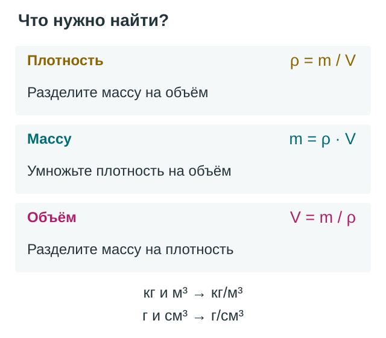
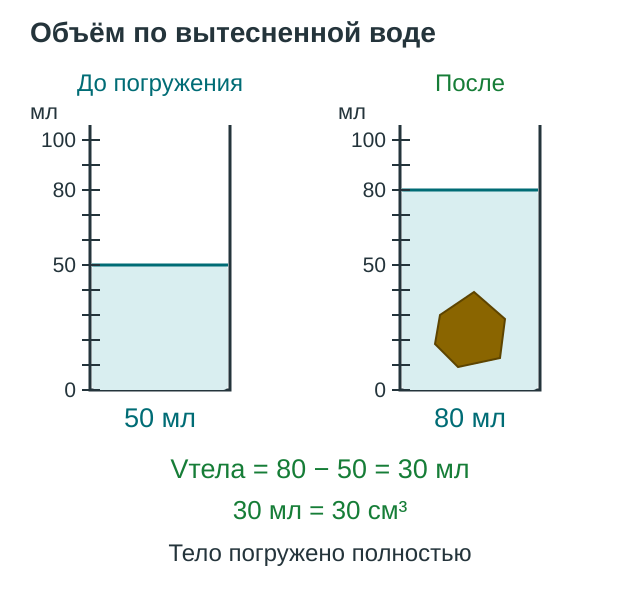

Решение задач по теме «Плотность вещества»
Чтобы решить задачу о плотности, недостаточно найти знакомые числа и подставить их в формулу. Нужно понять, масса какого вещества дана и какой объём оно занимает. На весах может стоять сосуд вместе с жидкостью, а внутри металлической детали может быть полость. Разберём, как учитывать такие условия и проверять результат.
Вспоминаем связь величин
Плотность показывает массу единицы объёма вещества. Её обозначают греческой буквой \(\rho\) («ро»). Для однородного сплошного тела плотность равна отношению массы \(m\) к объёму \(V\).


Сначала назовите искомую величину словами: «ищу массу жидкости» или «ищу объём металла». Это помогает выбрать формулу и не перепутать тело с веществом, из которого оно сделано.
Выбираем согласованные единицы
Для расчётов удобны два набора единиц:
| Масса | Объём | Плотность |
|---|---|---|
| \(\text{кг}\) | \(\text{м}^3\) | \(\text{кг/м}^3\) |
| \(\text{г}\) | \(\text{см}^3\) | \(\text{г/см}^3\) |
Например, если плотность дана в граммах на кубический сантиметр, а объём — в кубических сантиметрах, произведение даст массу в граммах. Переводить такую задачу в СИ необязательно, если условие этого не требует.
Кубический сантиметр — маленький объём: в одном кубическом метре их миллион. Поэтому \(100\ \text{см}^3=0{,}0001\ \text{м}^3\), а не \(0{,}01\ \text{м}^3\). Полезно записывать перевод отдельной строкой до вычислений.
Алгоритм решения
- Прочитайте условие и представьте ситуацию. Что взвешивали? Тело сплошное или полое? Что показывает мензурка?
- Запишите «Дано» и «Найти». У каждого числа должна быть единица измерения.
- Найдите промежуточные величины. При необходимости вычтите массу тары, вычислите разность показаний мензурки или объём по размерам.
- Согласуйте единицы и выберите формулу. Сначала запишите связь буквами, затем подставьте числа.
- Выполните расчёт и проверьте смысл. Укажите единицу и сформулируйте ответ словами. Обратная подстановка помогает обнаружить арифметическую ошибку.
Четыре разобранных примера
Пример 1. Плотность по вытесненной воде

Открыть схему измерения объёма крупнее

Тело неправильной формы
Условие. Масса сплошного однородного тела \(234\ \text{г}\). До погружения в мензурке было \(50\ \text{мл}\) воды, после полного погружения — \(80\ \text{мл}\). Найдите плотность тела. Оно не растворяется и не впитывает воду; пузырьков воздуха на нём нет.
Дано: \(m=234\ \text{г}\), \(V_1=50\ \text{мл}\), \(V_2=80\ \text{мл}\). Найти: \(\rho\).
Показание после погружения включает первоначальный объём воды. Объём самого тела равен только увеличению показания:
Теперь находим плотность:
Проверка: \(7{,}8\cdot30=234\ \text{г}\). Ответ: плотность тела \(7800\ \text{кг/м}^3\).
При неполном погружении разность показаний даст объём только погружённой части. Деление полной массы на такой объём приведёт к завышенному результату.
Пример 2. Масса жидкости и масса тары
Сколько масла в бутылке
Условие. В бутылке \(500\ \text{мл}\) масла плотностью \(0{,}9\ \text{г/см}^3\). Пустая бутылка имеет массу \(120\ \text{г}\). Найдите массу масла и массу бутылки с маслом.
Дано: \(V=500\ \text{см}^3\), \(\rho=0{,}9\ \text{г/см}^3\), \(m_{\text{тары}}=120\ \text{г}\). Найти: \(m_{\text{масла}}\), \(m_{\text{общ}}\).
Плотность масла связывает его объём именно с массой масла:
Для общей массы прибавляем массу тары:
Проверка: половина литра масла имеет половину массы литра этого масла: \(900/2=450\ \text{г}\). Ответ: масса масла \(450\ \text{г}\), бутылки с маслом — \(570\ \text{г}\).
В обратной задаче, когда известны результаты двух взвешиваний, массу жидкости находят вычитанием: из массы заполненного сосуда вычитают массу пустого.
Пример 3. Объём по массе
Сколько места займёт алюминий
Условие. Найдите объём сплошного алюминиевого бруска массой \(0{,}81\ \text{кг}\). Плотность алюминия по условию \(2{,}7\ \text{г/см}^3\).
Дано: \(m=0{,}81\ \text{кг}=810\ \text{г}\), \(\rho=2{,}7\ \text{г/см}^3\). Найти: \(V\).
Перевод массы в граммы согласовал её с единицей плотности:
Проверка: \(2{,}7\cdot300=810\ \text{г}\). Ответ: объём бруска \(300\ \text{см}^3\), или \(0{,}0003\ \text{м}^3\).
При одинаковой массе более плотное вещество занимает меньший объём: для каждого кубического сантиметра требуется больше массы.
Пример 4. Объём материала и объём полости
Что находится внутри детали
Условие. Внешний объём закрытой алюминиевой детали \(100\ \text{см}^3\), её масса \(216\ \text{г}\). Плотность алюминия \(2{,}7\ \text{г/см}^3\). Найдите объём полости. Массой воздуха внутри пренебречь.
Дано: \(V_{\text{внеш}}=100\ \text{см}^3\), \(m=216\ \text{г}\), \(\rho=2{,}7\ \text{г/см}^3\). Найти: \(V_{\text{полости}}\).
Масса принадлежит алюминию, поэтому деление на его плотность даёт объём алюминия:
Внешний объём включает и материал, и полость:
Проверка: \(80+20=100\ \text{см}^3\), масса алюминия \(2{,}7\cdot80=216\ \text{г}\). Ответ: объём полости \(20\ \text{см}^3\).
Отношение массы такой детали к внешнему объёму даёт её среднюю плотность: \(216/100=2{,}16\ \text{г/см}^3\). Это меньше плотности алюминия, поскольку часть внешнего объёма занята полостью.
Что проверять в своём решении
Главное в этих задачах — правильно выделить тело или вещество, определить относящиеся к нему массу и объём и только затем выполнить расчёт. Все три формулы выражают одну связь.
Вопросы для самопроверки
- Почему плотность половины однородного бруска такая же, как целого?
- Почему при погружении тела нужно вычитать первоначальное показание мензурки?
- Когда из результата взвешивания требуется вычесть массу тары?
- Чем объём материала полой детали отличается от её внешнего объёма?
- Почему число \(800\) в записи плотности не обязательно означает большую плотность, чем число \(2{,}7\)?
Задачи для самостоятельной работы
Записывайте исходные данные, формулу, расчёт с единицами и ответ. Значения плотности для расчётов указаны в условиях.
Базовый уровень
- Переведите \(1{,}2\ \text{г/см}^3\) и \(7{,}8\ \text{г/см}^3\) в \(\text{кг/м}^3\); \(900\ \text{кг/м}^3\) и \(2500\ \text{кг/м}^3\) — в \(\text{г/см}^3\).
- Сплошный однородный брусок имеет массу \(180\ \text{г}\) и объём \(60\ \text{см}^3\). Найдите его плотность в двух единицах.
- Объём сплошной стальной детали \(40\ \text{см}^3\), плотность стали \(7{,}8\ \text{г/см}^3\). Найдите массу детали.
- Масса масла \(360\ \text{г}\), его плотность \(0{,}9\ \text{г/см}^3\). Найдите объём масла в кубических сантиметрах и миллилитрах.
Несколько действий
- Масса сплошного тела \(135\ \text{г}\). При полном погружении в воду показание мензурки изменилось с \(40\) до \(90\ \text{мл}\). Найдите плотность тела. Оно не впитывает воду, не растворяется; пузырьков нет.
- Пустая банка имеет массу \(150\ \text{г}\), а с жидкостью — \(750\ \text{г}\). Объём жидкости \(500\ \text{мл}\). Найдите плотность жидкости в \(\text{кг/м}^3\).
- В пустой сосуд массой \(200\ \text{г}\) налили \(0{,}75\ \text{л}\) жидкости плотностью \(800\ \text{кг/м}^3\). Найдите массу заполненного сосуда в килограммах.
- Сплошной прямоугольный брусок имеет размеры \(2\ \text{см}\), \(5\ \text{см}\) и \(10\ \text{см}\). Его масса \(270\ \text{г}\). Найдите плотность материала.
Задачи на рассуждение
- Внешний объём закрытой стальной детали \(50\ \text{см}^3\), масса \(312\ \text{г}\). Плотность стали \(7{,}8\ \text{г/см}^3\). Найдите объём полости и среднюю плотность детали. Массой воздуха пренебречь.
- Ученик записал для сплошного алюминиевого бруска массу \(540\ \text{г}\) и размеры \(2\ \text{см}\), \(5\ \text{см}\), \(10\ \text{см}\). Плотность алюминия \(2{,}7\ \text{г/см}^3\). Согласуются ли записи с условием о материале? Покажите расчёт и укажите, какие измерения следует перепроверить. Можно ли по этим данным однозначно назвать ошибочную запись?